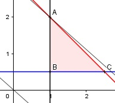

Aufgabe 78 Eine Baumschule hat für die Neuanpflanzung von Kiefern und Tannen eine maximale Fäche von 3 ha zur Verfügung. Es sollen mindestens 1 ha Tannen und 0,5 ha Kiefern angepflanzt werden. Beim Verkauf erzielt die Schule einen Gewinn von 800 €/ha für die Tannen und einen von 900 €/ha für die Kiefern. Wie hoch ist der maximale Gewinn? Wie groß müssen die Anbauflächen für Tannen und Kiefern sein? x = Fläche für Tannen in ha y = Fläche für Kiefern in ha Bedingungen: x ≥ 1 x ∈ ℚ⁺ y ≥ 0,5 y ∈ ℚ⁺ x + y ≤ 3 Zielfunktion: G = 800x + 900y Randgerade 1: x = 1 Randgerade 2: y = 0,5 Randgerade 3: x + y = 3

Die Eckpunkte A, B, und C bilden das Planungs- gebiet, das alle Ungleichungen erfüllt. A ist der Schnittpunkt der Randgeraden 1 und 3 x + y = 3 1 + y = 3 |-1 y = 2 A(1|2) B ist der Schnittpunkt der Randgeraden 1 und 2 B(1|0,5) C ist der Schnittpunkt der Randgeraden 1 und 3 x + y = 3 x + 0,5 = 3 |-0,5 x = 2,5 C(2,5|0,5) Die Parallele der Zielfunktion 800x + 900y = 0 liegt in A am höchsten --> Gmax = 800 * 1 + 900 * 2 = 2 600 € --> Tannen auf einer Fläche von 1 ha, Kiefern auf 2 ha.